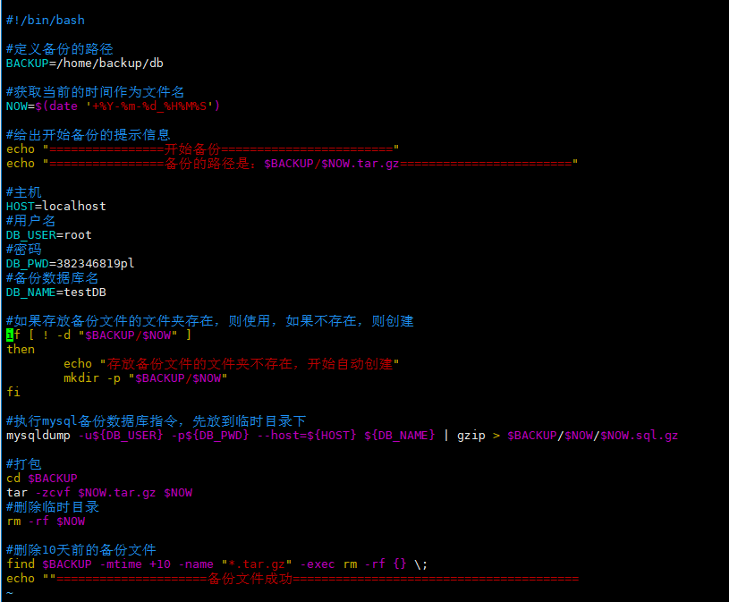

需求分析：
每天凌晨2点备份数据库testDB到/data/backup/db
备份开始和备份结束能够给出相应的提示信息
备份后的文件要求以备份时间为文件名，并打成.tar.gz包，如：2018-10-02_020000.tar.gz
在备份的同时，检查是否有10天前备份的数据文件，如果有就将其删除
实现：
#!/bin/bash
#定义备份的路径
BACKUP=/home/backup/db
#获取当前的时间作为文件名
NOW=$(date '+%Y-%m-%d_%H%M%S')
#给出开始备份的提示信息
echo "================开始备份========================"
echo "================备份的路径是：$BACKUP/$NOW.tar.gz========================"
#主机
HOST=localhost
#用户名
DB_USER=root
#密码
DB_PWD=382346819pl
#备份数据库名
DB_NAME=testDB
#如果存放备份文件的文件夹存在，则使用，如果不存在，则创建
if [ ! -d "$BACKUP/$NOW" ]
then
echo "存放备份文件的文件夹不存在，开始自动创建"
mkdir -p "$BACKUP/$NOW"
fi
#执行mysql备份数据库指令，先放到临时目录下
mysqldump -u${DB_USER} -p${DB_PWD} --host=${HOST} ${DB_NAME} | gzip > $BACKUP/$NOW/$NOW.sql.gz
#打包
cd $BACKUP
tar -zcvf $NOW.tar.gz $NOW
#删除临时目录
rm -rf $NOW
#删除10天前的备份文件
find $BACKUP -mtime +10 -name "*.tar.gz" -exec rm -rf {} \;
echo ""=====================备份文件成功========================================

加入到定时任务中，先敲crontab -e，然后输入下面内容